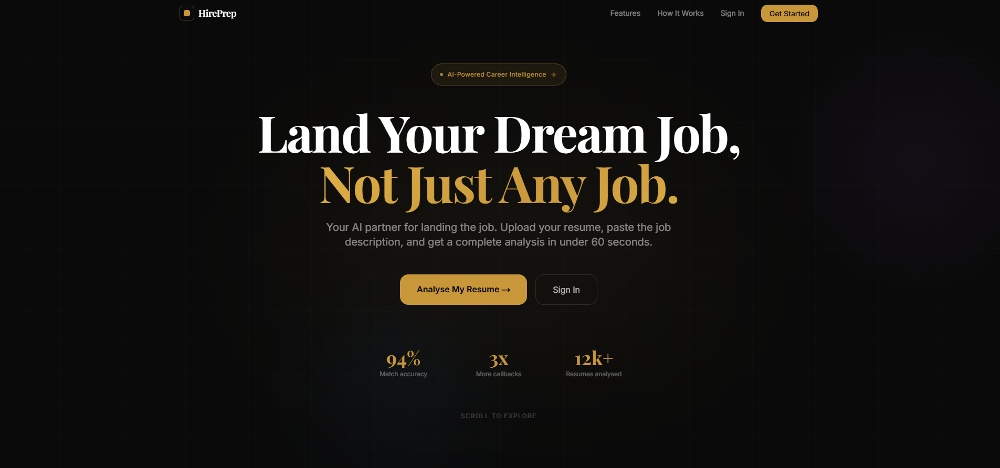

VIEW PROJECT ↗AI / CAREER TOOLS01
HirePrep
AI-powered resume analysis and interview preparation, from your first match score to a personalized 14-day prep plan.
Resume & ATS scores · Skill gaps · Interview questions
Next.jsTypeScriptMongoDBClaude API
Behind the build
Matches resumes against job descriptions, breaks down scores by category, generates interview questions with hints, and creates an ATS-friendly resume and day-by-day study plan.
Tailwind CSSFramer MotionMongooseNextAuth.js v4pdf-parse